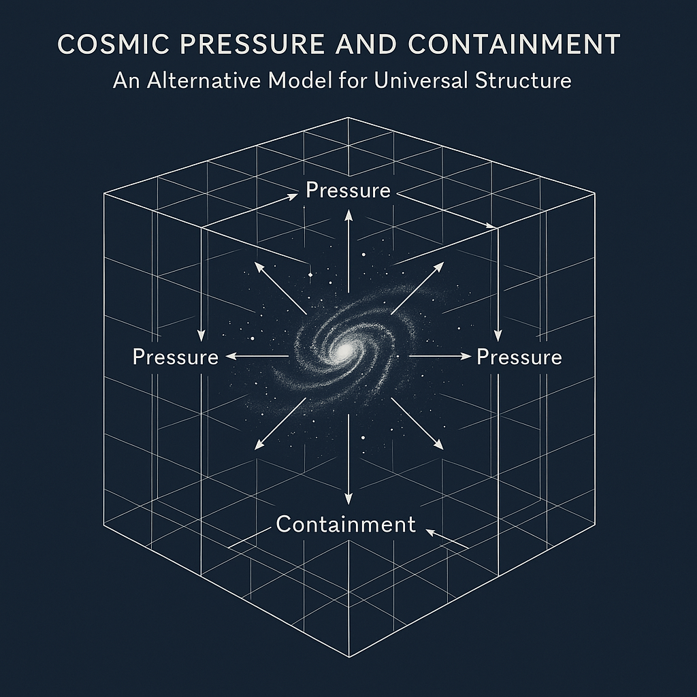
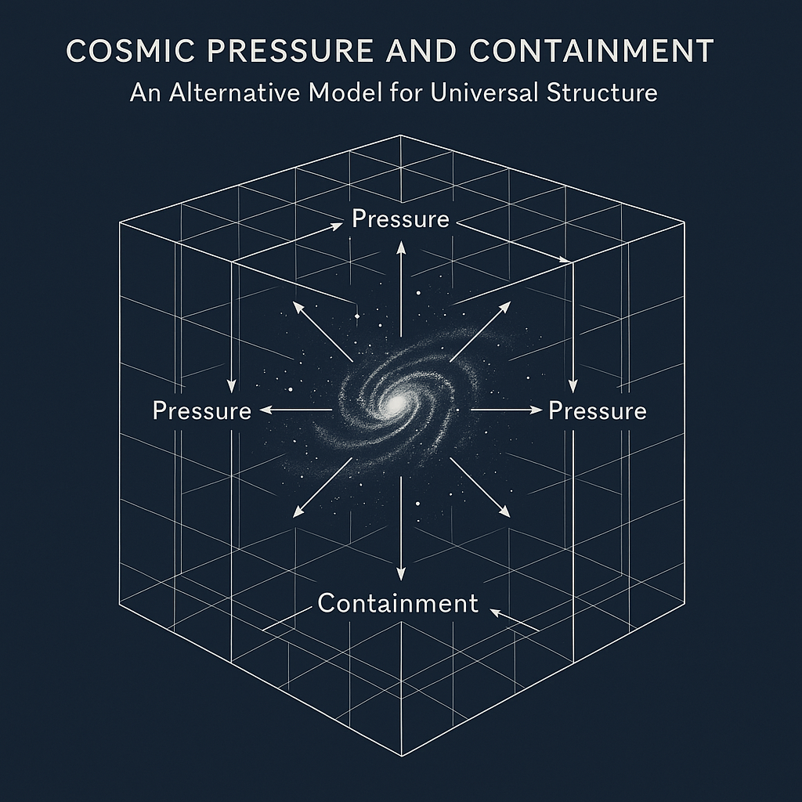

الملخص
تقدم نظرية الضغط والاحتواء الكوني (CPC) تصورًا جديدًا لفهم بنية الكون يقوم على توازن بين الضغط الداخلي والاحتواء الخارجي. هذا النموذج يتحدى الفرضية السائدة بأن الجاذبية وحدها تفسر التمدد الكوني واستقراره.
١. المقدمة
تفسر النماذج التقليدية الكونية مثل النسبية العامة حركة الكون من خلال الجاذبية، لكن الملاحظات مثل التوسع المتسارع للكون وعدم التوازن بين المادة والمادة المضادة تشير إلى الحاجة إلى نموذج جديد.
٢. عشرة أدلة علمية تدعم نظرية CPC
- المجرات تبتعد عن بعضها رغم الجاذبية، مما يدل على ضغط داخلي دافع.
- الكون لم ينهار رغم الجاذبية، ما يشير إلى وجود احتواء منظم.
- الثقوب السوداء لها حدود، مما يشير إلى كبح خارجي لامتدادها.
- إشعاع الخلفية الكونية متجانس بشكل غير مفسر بالجاذبية فقط.
- غياب التوازن بين المادة والمادة المضادة يعزز فكرة تأثير الاحتواء.
- تأثير كازيمير يثبت وجود ضغط في الفراغ نفسه.
- نظرية الجاذبية لم توحد مع ميكانيكا الكم، ما يفتح بابًا لنماذج جديدة.
- إذا كان الكون محدودًا، فإن ذلك يتطلب قوة احتواء خارجية.
- يشبه الكون بنية فقاعة غازية محاطة بجدار متوازن.
- الأنظمة البيولوجية والجيولوجية كلها تحكمها قوانين الضغط.
٣. انفجار الكون — نهاية نظرية
إذا فاق الضغط الداخلي قدرة الاحتواء، فقد يؤدي ذلك إلى انفجار كوني شامل.
٤. رد فعل المحيطات
بما أن الماء غير قابل للانضغاط، فإن المحيطات ستكون أول من يتأثر بهذا الانفجار.
٥. توازن الأجسام في الفضاء
وفقا لنظرية CPC، الأجسام لا تبقى في مدارها فقط بسبب الجاذبية، بل بسبب توازن الضغط حولها.
٦. تأثير الضغط على الضوء
الضغط قد يؤثر على سرعة الضوء وانزياحه، مثلًا في ظواهر العدسة الجاذبية والانزياح الأحمر.
٧. المعادلات النظرية
توازن الضغط: Pi × A = Fc × A ⇒ Pi = Fc
الضغط المداري: P(r) = P₀ / (1 + k r²)
الانزياح الأحمر: Δλ ∝ ∇P · d
٨. قصور النظريات الرئيسية
- النسبية العامة تعتمد على طاقة مظلمة غير مثبتة.
- الجاذبية النيوتونية تتجاهل تأثير الضغط.
- نماذج الطاقة المظلمة تعتمد على فرضيات غير قابلة للرصد.
- نظرية الأوتار معقدة وتفتقر للتجربة المباشرة.
٩. مزايا نموذج CPC
- لا حاجة لطاقة مظلمة.
- خالي من التفردات.
- مشابه للأنظمة الطبيعية في التوازن.
١٠. الخاتمة
يوفر نموذج الضغط والاحتواء الكوني رؤية جديدة لبنية الكون باستخدام مبادئ الضغط، وهو بديل واعد للنماذج التقليدية المبنية على الجاذبية فقط.
١٢. المراجع
- Misner, Thorne, Wheeler. Gravitation. Freeman, 1973.
- Padmanabhan. Structure Formation in the Universe. CUP, 1993.
- Peebles. Principles of Physical Cosmology. Princeton, 1993.
- Riess et al. Observational Evidence. AJ, 1998.
- Verlinde. Emergent Gravity. SciPost Physics, 2017.
- Zee. Quantum Field Theory. Princeton, 2010.
- Weinberg. Gravitation and Cosmology. Wiley, 1972.
© 2025 عثمان مدني — جمیع الحقوق محفوظة


 
